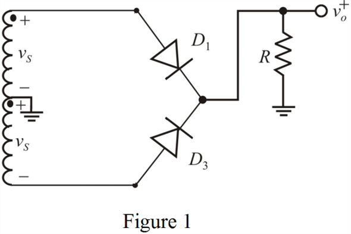
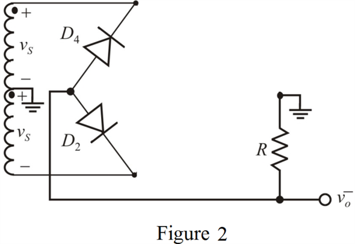
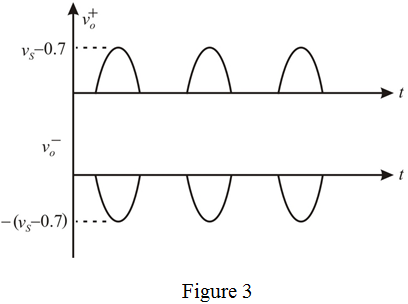

Step 1:
Refer to Figure P4.74 in the textbook for the full wave bridge rectifier circuit.
The circuit looks like a centre tapped full wave rectifier. In one case, diodes act as a full wave rectifier for the output at .
Draw the full wave rectifier circuit for .

Step 2:
From Figure 1 observe that during the positive half cycle of the input signal, the diode  conducts and diode is open. Each diode provides 0.7 V while conducting. So, the output voltage is,
conducts and diode is open. Each diode provides 0.7 V while conducting. So, the output voltage is,
In another case the diodes act as a full wave rectifier for the output at .
Draw the full wave rectifier circuit for .

Step 3:
From Figure 2 observe that during the positive half cycle of the input signal, the diode  conducts and the diode
conducts and the diode  is open. Each diode provides 0.7 V when conducting. So, the output voltage is,
is open. Each diode provides 0.7 V when conducting. So, the output voltage is,
The output waveform for both outputs is shown in Figure 3.

Step 4:
Therefore, the output waveforms for both are drawn.
The average or dc output voltage when the input voltage is greater than 0.7 V is,
The average output voltage is .
Substitute for  to calculate the required peak of the input voltage.
to calculate the required peak of the input voltage.
The sine wave amplitude across the entire secondary winding is , that is,
Therefore, the required amplitude of the sine wave across the entire secondary winding is .
Step 5:
The peak inverse voltage looking into the diode  is,
is,
Therefore, the peak inverse voltage is .
Using the safety factor of 1.5 (diode allows safety margin), the peak inverse voltage for the diode is,
Therefore, the peak inverse voltage using safety factor is .